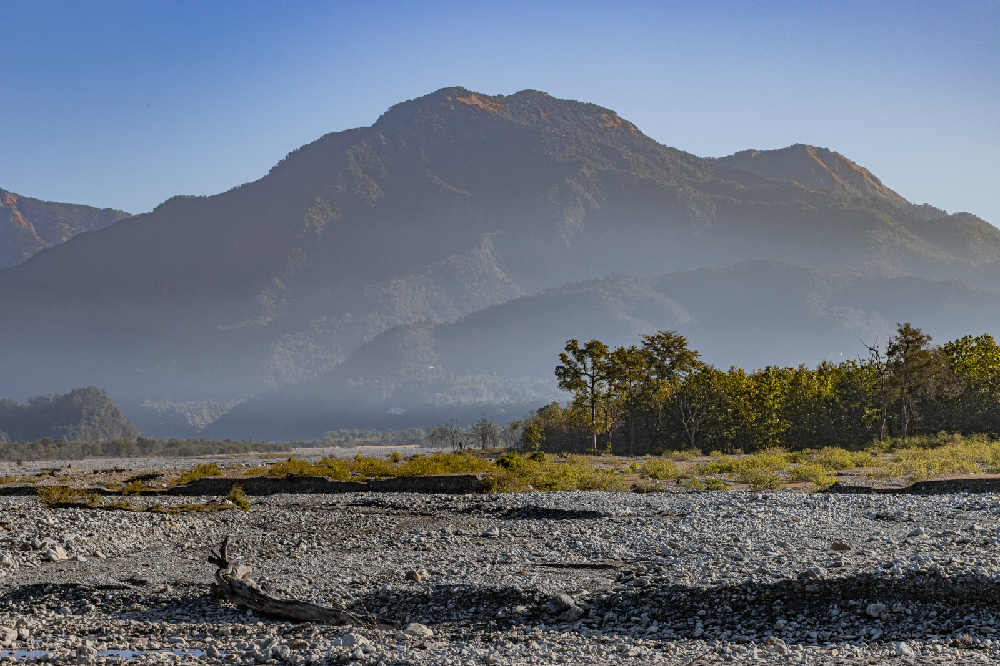

The short answer: Jim Corbett is one of the most reliable weekend destinations from Delhi-NCR, which makes land around Ramnagar genuinely interesting for a homestay or second home. But the Corbett belt sits in Nainital district — one of the 11 Uttarakhand districts where the 2025 law restricts outsiders from buying agricultural/horticultural land. The opportunity is real; the legal path is narrow. Clear the law first, then chase the location.
Why Corbett works for a Delhi buyer
- Proven, year-round demand. Corbett is a default short-break from NCR — tiger-safari tourism, riverside resorts and weekend traffic that doesn't switch off seasonally the way some hill towns do.
- Homestay economics. A well-located cottage or homestay near the park taps a steady tourism flow, giving a second home a plausible income role (not just a holding cost).
- Drivable. The Corbett belt around Ramnagar is within a comfortable road trip of Delhi-NCR — central to the "48-hour city" weekend-home pattern now driving NCR demand.
The legal fine print you cannot skip
This is where Corbett buyers most often get into trouble, because the emotional pull is strong and the rules changed recently:
- Nainital is a restricted district. Under Uttarakhand's February 2025 land law, outsiders are barred from buying agricultural and horticultural land in 11 of 13 districts, Nainital included. Much of the attractive "forest-edge" land is exactly this kind of land.
- Residential limits apply. Non-residents are reported to be limited to roughly 250 sq m residential (about 500 sq m commercial), often a once-in-a-lifetime allowance outside municipal areas.
- Permission is now state-level, and an affidavit of intended use is reportedly mandatory.
- Forest and eco-sensitive-zone rules stack on top. Land near a national park carries buffer-zone, construction and environmental restrictions that have nothing to do with the land law and everything to do with whether you can build.
Verify before you rely: the exact limits and their application to specific Corbett-area parcels need checking against the gazetted Bhu-Kanoon amendment and forest/zoning notifications, not a seller's assurance. "It's fine, everyone buys it this way" is a red flag, not a clearance.
The honest case against
- A lot of what's marketed may be un-buyable (legally) by an outsider — agricultural land in a restricted district, dressed up as a resort plot.
- Buildability ≠ ownership. Even a legal plot may face forest buffer and construction limits that gut the homestay plan.
- Commercial use triggers more rules. Running a homestay for income is a commercial activity with its own permissions, GST and licensing considerations.
- Thin, sentiment-driven resale. Prices can be set by what a weekender will pay emotionally, not by fundamentals.
How to approach a Corbett plot
- Start with the land class and district rules. Confirm the parcel is something a non-resident can legally hold for your intended use.
- Separate "own" from "build" from "operate." Check title and buildability (forest/eco-zone) and homestay permissions — all three, before you pay.
- Prefer legal residential plots with genuine access over cheap agricultural land with a persuasive story.
- Underwrite the homestay honestly. Model real occupancy and management cost; treat income as a bonus to the lifestyle, not a guarantee.
Our posture near Corbett is deliberately strict: the location sells itself, which is exactly why the discipline has to come from diligence. If a parcel can't clear the land law, the forest rules and the homestay permissions together, the honest advice is to walk.
Frequently asked questions
Can an outsider buy land near Jim Corbett?
It is restricted. Nainital district falls under Uttarakhand's 2025 land law, which bars outsiders from buying agricultural/horticultural land in 11 of 13 districts. A non-resident may still buy a limited-size residential plot — verify the specific parcel's land class and the current rules before committing.
How much does land near Jim Corbett cost?
Prices vary widely by proximity to the park, access and land class, and most quoted figures come from sellers. Verify against registered transactions for comparable, legally buildable plots rather than brochure rates.
Can I build a homestay on a plot near Corbett?
Possibly, but it requires more than owning the land: forest buffer and eco-sensitive-zone rules affect buildability, and operating a homestay is a commercial activity needing its own permissions and licensing. Confirm all three — ownership, buildability, operation — before buying.
Is land near Jim Corbett a good investment?
For a Delhi-NCR buyer wanting a weekend home with homestay potential, a legally clean, buildable plot can be attractive given Corbett's steady tourism. The risk is paying for land you can't legally hold or build on — so diligence, not location, decides the outcome.